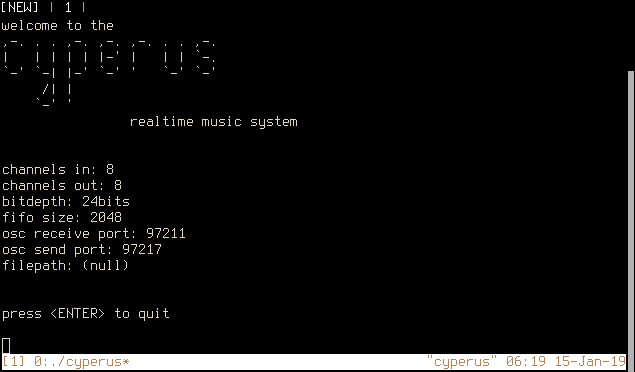

welcome to the cyperus realtime music system
this linux software enables a computer to process and generate musically-inclined signals in realtime. it is a client of the Jack Audio Connection Kit (http://jackaudio.org).
please file questions, concerns, and bugs on github or send directly to me at murray@petrichor.systems.
Clone the cyperus github repository
$ git clone https://github.com/petrichorsystems/cyperus
Descend into repository directory and build cyperus.
$ cd cyperus $ make
$ ./cyperus -h welcome to the cyperus realtime music system Usage: cyperus [options] [arg] Options: -h, --help displays this menu -i, --input input channels. default: 8 -o, --output output channels. default: 8 -b, --bitdepth set bitdepth of capture to 8, 16, 24, 32, 64, or 128. default: 24 -p, --port set osc interface receiving port. default: 97211 -sp, --send-port set osc interface sending port. default: 97217 -f, --file set path of session file to load preexisting sounds. -fi, --fifo-size set fifo buffer size for each channel. default: 2048 documentation available soon
Start jackd and then cyperus or start cyperus and jackd will be started automatically with your saved jackd settings.
$ jackd -d alsa -p 128 & $ ./cyperus
By default, cyperus will start up a a JACK client and an OpenSoundControl server with the listed defaults.

The open sound control interface provided by cyperus expresses functions of Ficus and clock-related messages for the sequencer. While the osc interface can be used simulataneously with the monome, the monome may not update its interface for all state changes initiated by osc messages. Also keep in mind you have a maximum of forty-eight banks for sounds and eight channels in+out for related functions.
/cyperus/load si [path] [bank] -- loads a wav from filesystem
/cyperus/loop ii [bank] [state] -- sets looping state of a bank
/cyperus/setmixout iii [bank] [channel] [state] -- sets 1/on or 0/off state for mixing of capture/playback channels
/cyperus/setmixin iii [bank] [channel] [state]
/cyperus/jackmonitor iii [channel_out] [channel_in] [state] -- makes raw JACK port connections, 1/on 0/off
/cyperus/playback i [bank] -- plays back a sound
/cyperus/playback_speed if [bank] [speed_multiplier] -- sets playback speed of a sound, positive/negative multiplier
/cyperus/playback_rampup if [bank] [length] -- amplitude ramp, decimal fraction of sound
/cyperus/playback_rampdown if [bank] [length]
/cyperus/capture ii [bank] [seconds] -- begin capture on sound for n seconds
/cyperus/capturef ii [bank] [frames] -- begin capture on sound for n frames
/cyperus/durationf_out i [bank] -- get duration of sound in frames
/cyperus/durationf_in i [bank] -- get duration of captured sound in frames (may or may not be loaded in cyperus)
/cyperus/killplayback i [bank] -- stops playback of sound
/cyperus/killcapture i [bank] -- stops capture of sound
/cyperus/isplaying i [bank] -- returns whether sound is playing, 1/is and 0/isn't
/cyperus/iscapturing i [bank] -- returns whether sound is capturing
/cyperus/islooping i [bank] -- returns whether sound is looping
/cyperus/clock -- if clock input is turned on via monome, advance cyperus's sequencer by one step